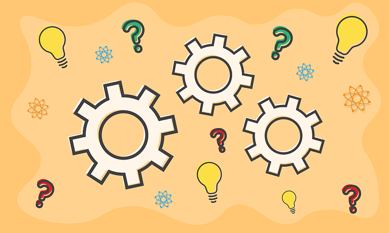
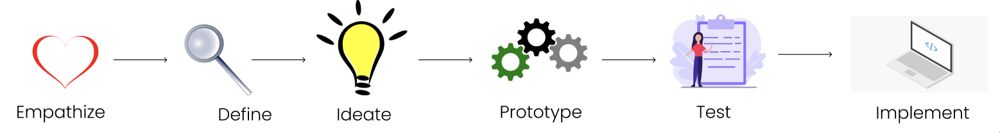
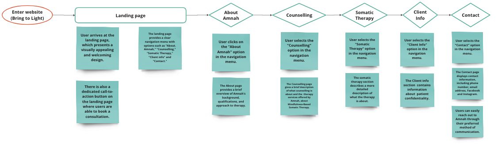
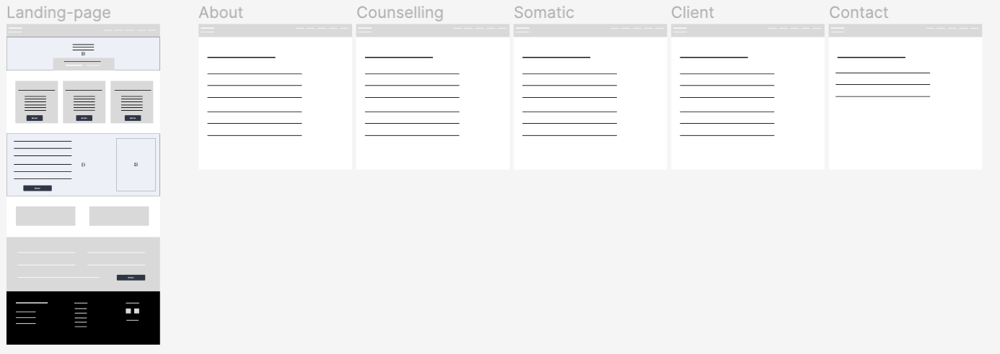
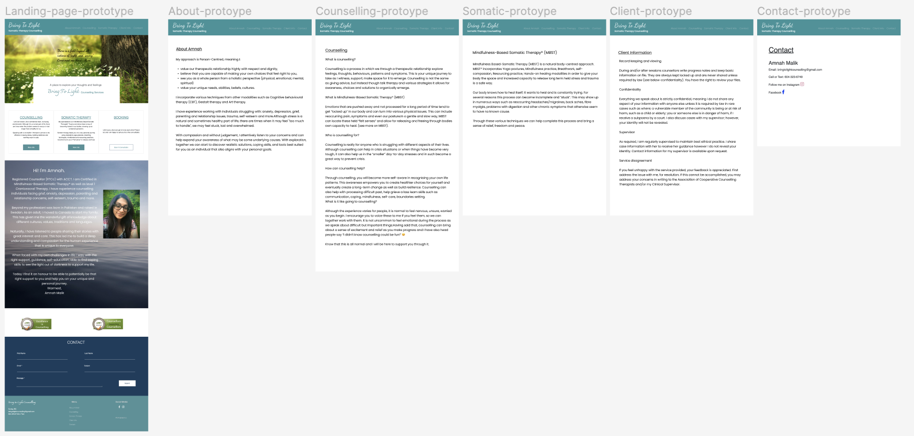

Case Study: Enhancing User Experience for Amnah's website based on her
practice as a psychologist
Project Overview
The aim of this project was to create a visually appealing,
user-friendly, and informative website that effectively communicates
Amnah's expertise as a psychologist while providing a seamless and
engaging experience for visitors seeking mental health support.

Problem
The initial challenge was to understand the target audience and
their needs. Through user research and interviews, we discovered
that visitors to the website were often in a vulnerable state,
seeking support and guidance for their mental well-being. It was
crucial to create a design that exuded trust, compassion, and
professionalism, while also facilitating easy access to essential
information.
Role
UX/UI Designer
Visual Designer
UX Researcher
Web Developer
Tools
Paper and pen (Note taking and sketching)
Figma (Visual & Interface design)
Google Meet (Interviews)
Visual Studio Code (Coding)
Duration
One week
Design Process

Empathy
To understand the target audience's needs, I conducted extensive
research by exploring online forums and engaging in conversations
with individuals seeking mental health support. Through this
empathetic approach, I gained insights into their pain points,
concerns, and preferences. This research served as a foundation for
understanding the target audience's challenges and aspirations.
Define
Based on the insights gathered from the empathize phase, I defined
the primary goals and requirements for the website. This involved
outlining the essential information visitors sought, such as Amnah's
qualifications, areas of expertise, and contact details. I also
aimed to create a website that would convey a sense of trust,
compassion, and professionalism, while also ensuring easy access to
critical resources and support.
Ideate
During the ideation phase, I brainstormed and sketched out various
design concepts that aligned with the defined goals and
requirements. I explored different visual aesthetics, typography
options, and layout structures. I aimed to create a serene and
welcoming atmosphere through the use of calming colors and imagery
that would resonate with visitors seeking mental health support.
Prototype
Using prototyping tools like Figma, I transformed the ideation
concepts into interactive prototypes. These prototypes allowed me to
visualize the proposed user flow, test the navigation elements, and
evaluate the content organization. I shared the prototypes with
friends and family, gathering feedback and incorporating their
suggestions to refine the design.
Testing
Through usability testing sessions with potential users, I observed
their interactions and solicited feedback to improve the user
experience. While I didn't have access to a large sample size, I
utilized online platforms and engaged with individuals who
volunteered to provide feedback. This iterative process allowed me
to make necessary adjustments, ensuring intuitive navigation,
readability, and easy access to essential information.
Implement
Using my skills in front-end development, I implemented the UX/UI
changes on Amnah's psychologist website. I followed best practices
to optimize the website's performance, responsiveness, and
accessibility. I also ensured the visual aesthetics, intuitive
navigation, and informative content were consistent with the design
decisions made during the earlier phases.
User Flow
I constructed a user flowchart to present a visual diagram that
illustrates the path users will take when interacting with Amnah's
website. The below diagram depicts the sequence of steps and decision
points a user encounters, showcasing the different pages and actions
they engage with during their journey.

Sitemap
After understanding the user flow, I created a sitemap to aid in
planning and organizing the website's information architecture,
navigation, and user experience. This strategy serves as a blueprint
that guides the design and development process. My sitemap for Amnah's
website was created before designing the specific page layouts, to
ensure a logical and intuitive structure for the website. The below
sitemap illustrates how users can navigate through the website,
indicating the primary navigation menu (Landing page) and secondary
menus.
Style guide
Wireframes
During the design process for Amnah's psychology website, I created
low-fidelity wireframes to establish the basic structure and layout of
the user interface. Using Figma, I created wireframes for key pages such
as the homepage, about page, counselling page, somatic therapy page,
client info page and contact page. The wireframes focused on presenting
the essential content elements and overall layout without getting into
visual design details.

Prototype
As part of the design process for the psychology website, I created an
interactive prototype to bring the wireframes to life and provide a more
tangible representation of the user experience. Using the prototyping
tool, Figma, I transformed the wireframes into an interactive prototype
with clickable elements. The prototype allowed me to demonstrate how
users would navigate through the website and interact with different
features like the contact form.

Testing
To gather feedback and test the usability of the prototype, I invited
friends, family, and potential users to navigate through the interactive
screens. I observed their interactions, listened to their feedback, and
made iterative improvements based on their suggestions. This iterative
process helped me refine the prototype and address any usability issues
or confusion.
Results
By applying user-centered design principles and considering user
feedback, I successfully improved the overall user experience of the
website. Through wireframing and prototyping, I focused on creating
clear information hierarchies, intuitive navigation, and seamless
interactions.
One of the key goals of this project was to make important information
easily accessible to website visitors. By carefully organizing content
and ensuring logical information flows, users were able to locate and
access the psychologist's services, contact information, and background
with ease. The website provided a comprehensive overview of the
psychologist's practice and expertise.
Implementation
With my combined skills in UX/UI design and frontend development, I
translated the design into a functional website using HTML and CSS.
Leveraging my frontend development experience, I ensured a smooth
implementation process while maintaining the design's integrity and user
experience.
Challenges
Throughout the design process of this psychology website project, I
encountered some challenges that required problem-solving and
adaptation. The challenges faced were the following:
Lack of User Testing Opportunities:
Due to the nature of this personal project, I faced limitations in
conducting formal user testing. While I made efforts to gather
feedback from friends, family, and potential users, the sample size
and diversity of participants were limited. It was challenging to
gather comprehensive insights and validate the design decisions based
on a broader user perspective.
Balancing Functionality and Visual Design:
As this project primarily focused on usability and user experience, I
had to balance functionality and visual design. That is why I
prioritized functionality and ensured that the website's structure and
content were user-centered, even if the visual design could be further
refined.
Despite these challenges, I approached each obstacle as an opportunity
for growth and learning. I sought alternative solutions, gathered
feedback from peers, and adapted my approach when necessary. These
challenges allowed me to develop resilience, problem-solving skills, and
a better understanding of the complexities involved in UX/UI design.
Valuable Learning Experience
This project served as a valuable learning opportunity for me as a UX/UI
designer. It allowed me to apply design thinking, wireframing, and
prototyping techniques in a practical setting. I expanded my knowledge
of user-centered design principles, usability testing, and information
architecture.
Moving forward, I remain committed to continuous learning, building my
portfolio, and seeking opportunities to collaborate with experienced
professionals. I am eager to further develop my skills and contribute to
creating meaningful and user-centric digital experiences.